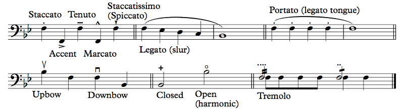
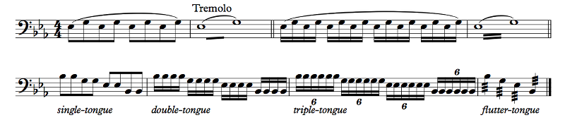
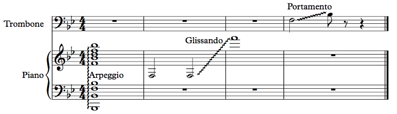
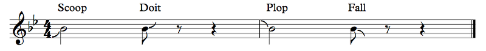

Let's articulate some notes!
Example 3.5
These are, roughly speaking, articulations. They tell the player some of the details about how to play the note: whether it should be played short, connected, etc., for example. Many instruments have a range of ways of starting and stopping a sound, and these symbols tell the player which of those ways to use. Like dynamics, these can be relative too, and since notes quite often don't have any articulation markings on them, the player has to use his judgment to articulate it properly. You can think of articulation as the consonant you use when speaking. For example, if you say the word "ladder" like most Americans, you only make a small move with your tongue on the "dd" in the middle of the word. Try saying that word now, and then try really emphasizing that D: "laDDer". That has a very different sound, doesn't it? When writing vocal music, it's important to be aware of the different features of consonants, but in general, that's what these articulation markings are for. So let's go over them.
The first four are commonly used in jazz, and if you were to sing them, you'd sing each with a different syllable: a tenuto note is "doo", a staccato note is "dit", an accented note is "dah", and a marcato note is "dot" (pronounced with a vowel like "ah"). I think that's a good summary.
Staccato means "detached", and it generally just means to play the note short. If you had to get metrical, half the length would probably be appropriate, but most of the time the dot means "light" (Italian: leggiero), and "tastefully short". On wind instruments, there are actually two ways to stop the sound: you can use your tongue, like in the "t" of "dit", or you can use your diaphragm, like when you laugh. The diaphragm is much more difficult to control, but it can make a better, less snippy sound. Again, it's a judgment call.
The accent, sometimes also called a marcato (it can get confusing), is not usually very clearly defined. It doesn't actually mean to play louder; that's sfz. But playing it louder is one way to effect an accent. You can also just articulate it harder, like with a harder consonant, or just change your timbre — your "vowel", if you will — to something brighter. Notes with an accent should be... emphasized, somehow. It's a bit difficult to describe, and Sibelius won't do it justice (it'll just make the note louder). Another way to make an accent is to make the surrounding notes softer. Again, it's a judgment call.
The tenuto means "full value", but why would you short-change your notes in the first place anyway? Most people just play it as a non-accent, but sometimes the composer actually means that you should emphasize the note. Sometimes "full value" even means "leave some space between this note and the next", which is the exact opposite of what "full value" actually means. You kinda have to look at it and figure it out. Again, it's a judgment call.
The marcato means "marked", like, with additional emphasis. As the "dot" in the "doo-dit dah" system, it's both short and accented. Some composers don't actually want the note short, just more accented than a regular accent. If you see it over a whole note, for example, chances are you really just need to punch the hell out of that note. Punchy. That's probably how to best describe this articulation. Again, it's a judgment call.
Finally, the staccatissimo just means "very detached", and while the staccato is usually to be played light, the staccatissimo is usually to be played heavy. While the diaphragm way of stopping sound is fine in a staccato, in a staccatissimo you want to stop the sound as quickly as possible. Instead of thinking "dit", think "tut". Again, it's a judgment call.
See Rule 0. When you're performing a piece of music, your goal should (probably) be to make good music, and that means interpreting what the composer wrote even when the symbols may not be a perfect visualization.
Again, it's... a... judgment call! Hopefully the composer decided to give you some indication of what it means. If not... you're on your own!
I have no idea if you said it right; this is a text-based medium. But this is a technique used in string instruments where the bow bounces a little bit. This symbol does double duty; in some contexts it means staccatissimo, and in others it means spiccato. If you're playing a trumpet, it's not spiccato so you're safe playing things very short.
Next up is the slur. Legato means "connected", so when notes are under a slur, you should play them "connected", whatever that means. For voice and wind instruments, though, the slur has a specific meaning: don't articulate the notes following the first one. So this little descending quarter note thing would be played something like "dah-ah-ah-ah-aaaaaah", but without stopping the sound. In vocal music, singing a syllable on multiple notes is called melisma. On instruments like the piano, on the other hand, it just means to make the notes as connected as possible. "Legato" is more of a style, while a slur is this specific symbol. In a fast tempo, by the way, especially with short notes, it may be common practice to emphasize the first note of a slur a bit more than the others and to make the last note a bit shorter, to separate the slur from whatever comes next.
Caveat, though: some composers use the slur to indicate... I don't know what. Phrases? Who knows. There'll be a slur over many measures and there's no clear reason for it to be there. It suggests that the music in the slur should be "connected" somehow, but it's probably more of a general feeling than a specific instruction.
A tie is always between two adjacent notes, so if you have three notes, you need to tie the first one to the second and then tie the second to the third. A slur goes over (or under) many notes at once. But this is an interesting thing. How do you slur two notes of the same pitch if there's no break from one to the next? How in the world do you slur a staccato? The answer is that this is how many composers indicate portato, where notes are only lightly separated. In wind instruments, that's a "legato tongue", like the "dd" in "ladder" from earlier: just a light touch. Another option for notating this is a tenuto line and a staccato dot on the same note, although that can also indicate that the notes should long but clearly separated and articulated. You might also see tenuto lines under the slur instead of staccato dots. That probably looks better, doesn't it?
Next we have some instrument-specific notation. String instruments can bow up or down, and that sign tells you which to do. Yeah, the upbow is the downward wedge and the downbow is the upward box. Don't ask me. I'm not a string player. The downbow is usually stronger than the upbow, which is why composers feel the need to tell you how to bow your own instrument. HEY, COMPOSERS, DON'T TREAD ON ME! Next think I know there'll be boxes of bow rosin floating in the Harbor. By the way, there used to be a lot more Boston Harbor than there is now. And there used to be hills in Somerville. They took away our hills and our water at the same time and now Back Bay is a thing.
...OK, whatever. Next are some very much variable symbols: closed and open. These depend entirely on context. If you're playing an instrument with a mute, like a trumpet with a plunger or a horn being hand muted, these symbols tell you whether the mute should be on or off (though there'll need to be a direction somewhere to tell you that). The general term for stopping a special technique is naturale (nat.). A mute is a sordino, so you might see con sordino or con sord. to indicate putting on a mute, and senza sordino or senza sord. (or nat.) to indicate removing it. The plural is sordini, so sometimes it says that instead. Percussion instruments may sometimes also be played closed or open. For example, you might hold a triangle such that the sound stops right away (closed) or rings (open). On guitar, the open symbol indicates an open (that is, unfretted) string. For example, the first string on a guitar plays a high E. You can play that high E on the fifth fret of the second string instead for a more controlled sound, but sometimes the music calls for the open E string, and that's how it will tell you.
This symbol can also be used for harmonics, which we'll talk about... much later. Basically, the idea is that if you change the way you're playing a note somewhat lightly, you can get a much higher note. For example, the first string on the guitar produces a high E (E4). If you lightly touch the string at the 12th fret and pluck the string, you'll actually get a higher E (E5), but the entire string will still vibrate, so it's a different sound quality. If the music intends for you to play that higher note using a harmonic instead of actually playing it normally, you'll get that circle symbol.
Finally, the tremolo: it's not clear that this belongs under articulations, to be honest, but it's close enough. The tremolo is a measured repetition of the note. A single stroke means to play the note twice, and a double stroke to play it four times. Another way of notating it is using multiple staccato dots. You would really just do one or the other. The problem is that it's actually really unclear whether what I just said is the way it's intended to be played; for example, the single stroke may actually refer to eighth notes and the double stroke to 16th notes. In that case, the composer ideally will write out what he means the first time and use the dots or tremolos as shorthand thereafter once you already have an example.
Worry not! You can just do a few and write simile or sim. in the music, which means to just keep going like before. You may also see something like sempre stacc., meaning "always short", instead of those daft dots going on every note.
Example 3.6
First line here, we have the two-note tremolo. This is a bit weird. Again, there are two conventions, but it should be clear from context what's actually going on: the single stroke in the second measure could mean either divide into 2 notes or divide into eighth notes. The previous measure makes it clear. The way this kind of tremolo works, you rapidly (but measuredly) alternate between one note and the other. Both notes are written at full value: that's why you have two whole notes in 4/4. It's not necessarily easy to read, unfortunately! In the second set of measures, it's a 16th note tremolo, again, measured. I didn't show it, but with three strokes, it would most likely be an unmeasured tremolo: just alternate between the two notes as fast as humanly possible!
Second line I just illustrate some possibilities. Assuming a moderate enough tempo, you can single-tongue — "dah dah dah dah" — you can double-tongue — "daga daga daga daga" — or you can triple-tongue — "dagata dagata dagata dagata" or "dataga dataga dataga dataga". Obviously these only apply in wind instruments, and not even all of them: it's actually pretty hard to double tongue on single reeds like clarinets because some of this stuff depends on you being able to put your tongue in places that the mouthpiece occupies. On the other hand, this is completely standard in brass.
The last one, which I marked "flutter-tongue", is actually an unmeasured single-note tremolo (because it has three strokes, but again, context matters). On a percussion instrument it would represent a roll: hitting the instrument as quickly as possible repeatedly to make a kind of continuous sound, like one of those old-style alarm clocks with physical bells. Ring-a-ling-a-ling-a-ling! That's basically a roll. On a bowed string instrument, it's possible to create a similar effect by controlling the bow's bounce while moving it quickly back and forth. On a plucked string instrument, it's possible to do this by plucking the same string with multiple fingers alternating, or even plucking different strings at the same pitch. On a wind instrument, though, the way to achieve this effect is through flutter-tonguing: making a Spanish rolled R. How good this sounds can vary greatly by instrument; it's a pretty common effect on brass and flute, but instruments that go into your mouth make it much harder to do this and still sound good.
Example 3.7
Three effects here, all of which done very poorly by Sibelius. The first is an arpeggio. This word just refers to a chord — that's a bunch of notes at the same time — played one note at a time. So here we take a Bb major chord (we'll learn about those soon enough), which consists of Bb, D, and F at various octaves, and play it one note at a time thanks to that wavy vertical line.
That's why it's in an arpeggio. You can kind of use both hands and take some time to play each note in order. When composers want you to play physically impossible chords, arpeggiating them is the only option. If you look back at the Valsa—Chôro in Example 2.7, there are some chords that expect you to have more fingers in your hand than you probably actually have (unless you're a polydactyl, not to be confused with a pterodactyl, a kind of dinosaur). For those too, you have to arpeggiate. A guitar strum is essentially an arpeggio too. Sometimes there'll be a little arrow on the wavy line telling you whether to arpeggiate up or down. In certain guitar styles, like flamenco, there's actually a lot of both. Most of the time, though, the correct direction is up (meaning that you start at the lowest note, if that wasn't clear).
Next up is the gliss, short for glissando, meaning "gliding". In a glissando, you go from one note to the next while hitting all the notes in between, or at least whatever makes sense. On the piano, it's a little hard to hit every white key and black key, so you probably just drag your hand over the white keys or something. You may have to drag your other hand over the black keys at the same time if the music requires it. On other instruments, you may have to just hit the notes as quickly as you can. Playing scales quickly is an important skill for many instruments.
I keep forgetting that we haven't talked about those yet. Well, it's a bunch of notes in order. The kind of thing you might play in a glissando! Often, the notes of a glissando are actually written out, possibly using very small note values like 12-tuplets or something, and this kind of passage is called a run. You generally don't have to play those accurately, so long as you start and end at the right time and place.
On some instruments, the pitch change is actually continuous, and the glissando is sometimes known as a portamento. It'll often still be called a glissando. Instruments that allow a continuous gliss are trombone (you move the slide), timpani (move the pedal), strings (move your finger), slide whistle (move the slide), voice (...uh), clarinet (do some fucking magic, because it makes no sense that you can do this), and other similar instruments where you can change the pitch continuously. Note that Sibelius sucks at reproducing this, so here's the US Air Force band playing Henry Fillmore's Lassus Trombone, featuring this effect.
It would be nice, but... no. It depends on the way the instrument is set up. The trombone, for example, can only gliss between notes on the same partial.
Ooh. We're going to get to that eventually. But, basically, the trombone slide has seven positions, so you can only play seven notes on it at a certain partial. The trombone is generally pitched in Bb, so you can play E2, F2, F#2, G2, Ab2, A2, and Bb2, and you can slide between them. (The Bb2 is when the slide is all the way in. That's first position. As you move out the slide, the instrument gets longer so the pitch goes down.) If you blow faster, though, your pitch jumps up! Now you're at an F3, so the notes you can play by moving out the slide are B2, C3, C#3, D3, Eb3, E3, F3. Blow faster still, and you're at the next partial, at Bb3, and the notes you have available are E3, F3, F#3, G3, Ab3, A3, Bb3. Blow even faster, and you're at D4 (well, a bit flat, so your positions other than first need to be pushed in a bit). Even faster, F4. Even faster, a really flat Ab4. Even faster than that, Bb4. At that point your lips are probably not too happy with you. You can go higher if you're a good player, but it requires serious chops.
Each of these "levels" of notes is a partial, and you can only slide between notes at the same partial. So you can gliss from F2 to Bb2, but you really can't gliss from F2 to B2; it's just not possible.
Other instruments have similar restrictions. Obviously on a violin you can only gliss between notes that go on the same string. On timpani, the notes have to be possible on the same drum. On a clarinet, a bunch of things have to be just right for you to be able to slide your fingers just right to not squeak on the way to that high C or wherever you're going (can you tell that I tried and failed at this many, many times?).
I have an unrelated thing to add here: vibrato. Vibrato is when the sound... pulsates. It can do that fairly quickly or not. Singers can sing with vibrato or they can sing straight. Many instruments can do vibrato. Flutes can do it easily with their diaphragms. Violins can do it easily by essentially shaking the finger they're using to stop the string (they can't do vibrato on an open string, which is why open strings sound so different). Vibrato does not mean making the pitch go up and down, but sometimes that happens anyway. It takes a lot of air support to pull off a vibrato convincingly as a singer. The thing is, you will almost never see a composer specifically calling for vibrato or for a lack thereof, so there's no notation for it. It's usually a decision of the performers. But if there were a standard notation, it would be related to the notations in this section.
Example 3.8
Oh, Sibelius... It's a bit depressing to realize how far the technology probably should have come if they hadn't fired their entire development team and hired some offsite devs who, perhaps well-meaning, didn't actually create the product. Luckily, that team is making another notation program called Dorico. I don't know how it compares; maybe I'll buy it when it matures a bit more and ditch Sibelius once and for all. I hear good things, though.
Anyway, these jazz articulations should be self-explanatory. The scoop and plop mean that you start the note a little lower/higher and scoop/plop to the right note. How quickly this happens, or whether you start on the beat or before, depends on what makes sense for the piece. The doit (rhymes with "boy" but with a T at the end) and fall mean that when you end the note, you go up/down as you stop playing it. Falls are relatively common; the others on this example, less so. Sometimes a fall may be written as a gliss without a connecting note. Sometimes there might even be a connecting note in smaller print to tell you how far to take the fall/doit, or even where to start on a scoop or plop.
Whatever sounds the best in the song you're on. I usually try to stay on the note for a little bit before moving off so that you actually hear the note, and I treat the fall as an effect rather than as actual notes to play or sing. There's a lot of interpretation that goes into playing a piece of music, if you haven't noticed! The sheet music isn't a substitute for taste. There's one piece I've been involved in singing that has a fall lasting several beats. There's another where it's less than one. It depends on what the effect is that you're going for. With falls and doits, though, it's important that it not sound mechanical, and the sound has to die down during the fall/doit as well.
You might call these ornaments instead of articulations, since they're not really articulations, right? I mean, kinda? But they're a great way to transition to: